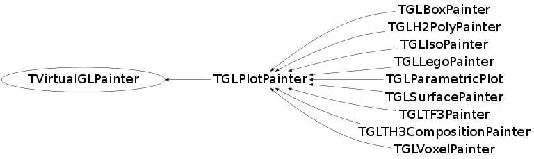

class TVirtualGLPainter
TVirtualGL The TVirtualGL class is an abstract base class defining the OpenGL interface protocol. All interactions with OpenGL should be done via the global pointer gVirtualGL. If the OpenGL library is available this pointer is pointing to an instance of the TGLKernel class which provides the actual interface to OpenGL. Using this scheme of ABC we can use OpenGL in other parts of the framework without having to link with the OpenGL library in case we don't use the classes using OpenGL.
Function Members (Methods)
This is an abstract class, constructors will not be documented.
Look at the header to check for available constructors.
public:
| virtual | ~TVirtualGLPainter() |
| static TClass* | Class() |
| virtual char* | GetPlotInfo(Int_t px, Int_t py) |
| virtual TClass* | IsA() const |
| TVirtualGLPainter& | operator=(const TVirtualGLPainter&) |
| virtual void | Paint() |
| virtual void | Pan(Int_t px, Int_t py) |
| virtual Bool_t | PlotSelected(Int_t px, Int_t py) |
| virtual void | ShowMembers(TMemberInspector& insp) |
| virtual void | Streamer(TBuffer& b) |
| void | StreamerNVirtual(TBuffer& b) |
Class Charts
{kind=link}
{kind=link}
{kind=link}
{kind=link}

Function documentation
void Paint()
char * GetPlotInfo(Int_t px, Int_t py)